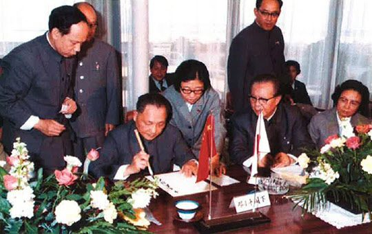
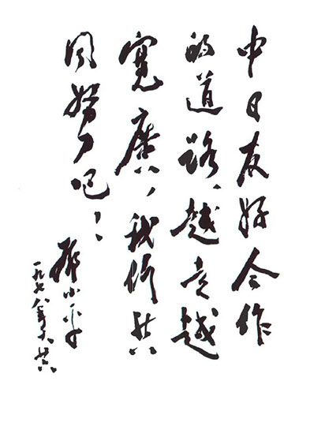

연재일 2015-04-07출처 조선일보 프리미엄조선 연재
(상편에서 계속)
박태준은 가슴의 응어리 같은 논리들을 꺼냈다. 대통령이 귀를 기울이자 비서들은 듣고만 있었다. 간간이 대화가 섞인 가운데 정연하게 전개해 나간 그의 긴 주장은 《조선일보》 선우휘 주필과 대담에서 처음 공개했던 내용들을 하나도 빼놓지 않았다. 뒷부분에 이르러서는 ‘사람 빼가기’가 야기할 수 있는 ‘양사(兩社) 공멸’을 우려하는 대목에다 또 하나의 방점을 세게 찍었다. 그리고 이렇게 마무리했다.
“세계 철강업계를 주도하는 선진국들은 개발도상국이 더 이상 제철소를 증설하는 것에 반대하고 있습니다. 세계 철강경기가 악화되면 더 심해질 것입니다. 앞으로는 포철 하나를 계속 확장해나가는 것만으로도 세계 철강업계의 압력을 견뎌내기가 어려울 것입니다.”
이윽고 박정희가 비서들을 바라보았다.
“본인은 박 사장의 말을 완벽하게 이해했는데, 여러분의 생각은 어떤가요? 혹시 질문이 있나요?”
묘한 절충안을 내는 목소리가 있었다.
“포철이 매년 이익을 내고 있으니, 제2제철소는 현대가 맡아서 하고 포철이 투자하는 방식은 어떻겠습니까?”
박태준은 즉각 반박했다.
“포철이 그런 데 쓸 돈은 없습니다. 밖으로는 융자상환과 설비도입에 막대한 돈이 필요하고 안으로는 사원훈련, 공장관리, 설비보수에 많은 돈이 들어갑니다. 더 중요한 것은, 제철소는 처음부터 끝까지 직접 맡아서 하지 않으면 실패하기 쉽습니다. 그 제안은 탁상공론에 불과합니다.”
박정희가 손에 쥔 연필로 톡톡 탁자를 치면서 독백처럼 중얼거렸다.
“정주영은 불도저같이 일하지. 국가경제 발전에 공헌도 크고….”
문득 팽팽한 긴장이 드리웠다. 침묵 중에 톡톡 탁자를 치던 연필이 멈췄다.
“그러나 철은 역시 박태준이야. 오늘의 만남이 결정에 큰 도움이 됐어.”
박정희가 똑 부러지게 말했다.
“제2제철소는 포철이 맡아야 합니다. 그렇게 하는 것이 국가발전에 도움이 되는 길입니다. 모두 수고했습니다.”
포항종합제철 창립 10주년을 기념하여 ‘鐵鋼은 國力’이란 휘호를 선물했던 박정희, 그의 카랑카랑한 결정이 떨어졌다. 포스코 사장이 대통령 비서진과의 긴 씨름에서 승리한 순간이었다. 아니었다. 박정희의 박태준에 대한 완전한 신뢰, 박태준의 논리에 대한 박정희의 냉철한 수긍이 하나로 뭉쳐져서 현대 경영진과 대통령 비서진의 동맹을 격파한 순간이었다. 또한 그 결정에는 박정희가 박태준의 ‘오랜 빛나는 노고에 대한 인간적인 보답’으로서 그에게 안기는 선물의 의미도 담겼다. 물론 선물을 받는 쪽은 그만한 자격을 갖추고 있었다.
제2제철소 실수요자라는, 포항제철소와 같은 제철소를 하나 더 세우라는 엄청나게 무거운 박정희의 선물을 받은 박태준. 그러나 그는 까맣게 몰랐다. 그것이 박정희의 ‘마지막 선물’이 될 줄이야….

박정희와 박태준의 완전한 신뢰관계가 새삼 확인된 그해 가을, 머잖아 ‘흰 고양이든 검은 고양이든 쥐를 잘 잡으면 된다’는 한마디 비유로 거대한 대륙과 10억 인구를 개혁
개방의 시대로 이끌어나갈 중국 최고실력자 덩샤오핑이 일본을 방문하고 있었다. 일본의 현대적 제철소에 진중한 시선을 기울이는 ‘작은 거인’을 10월 26일 이나야마 신일본제철 회장이 기미츠제철소로 안내하게 된다. 1965년 5월 한국의 박정희가 미국의 피츠버그 제철소를 찾아갔던 것처럼, 1978년 10월 중국의 덩샤오핑은 일본의 기미츠제철소를 찾아간 것이다. 양국 지도자의 선진 제철소 방문에 나타난 시간적 격차는 그대로 양국 산업화의 시간적 격차로 이어지고….
